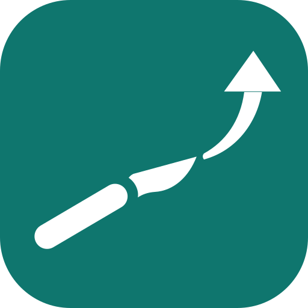

Every case,
a little better.
NextBlade is the personal training log for surgeons. Log a case in 15 seconds, see your learning curve, follow up outcomes and keep your X-rays on a timeline, without storing a single patient identifier.
Built by a practising surgeon. General surgery and trauma first.
Logging is mandatory. Learning from it isn't.
Surgeons record hundreds of operations a year, and get almost nothing back from it.
Tedious
Official logbooks are slow and clunky, so cases get logged late, in batches, or not at all.
No feedback
A list of numbers doesn't tell you whether you're getting faster, safer or more independent.
Outcomes lost
You rotate, the patient goes home, and you never learn how the case really ended.
A learning loop around every operation.
Four small habits that turn routine logging into deliberate practice.
Prepare
Open your personal playbook for the procedure: your key steps, pitfalls and today's focus. Readable in 30 seconds.
Log
Dictate or tap. Pre-filled from your last case, done in about 15 seconds, works offline in the corridor.
Follow up
A reminder on day 14 and 30: any complication? One tap closes the loop on every patient.
Progress
See your learning curve, autonomy and outcomes per procedure, and your X-rays side by side over time.
Everything a logbook should have been.
15-second logging
Voice or one tap, smart defaults from your last case, offline-first.
Learning curves
Operative time, conversions and complications per procedure, with a plain-language insight under every chart.
Outcome follow-up
Automatic reminders and Clavien-Dindo grading, so you finally know how your patients did.
X-ray & laparoscopy timeline
Pre-op, post-op and follow-up images side by side, with angle measurements. Auto-anonymized on your phone.
Personal playbooks
Your own steps, pitfalls and tips from your supervisors, shown before the next time you operate.
Yours for your whole career
Export to CSV and PDF anytime, in formats ready for training logbooks and credentialing. Free, always.
No patient names. No IDs. Ever.
NextBlade is built so that sensitive data never enters the app in the first place.
- Only age band, procedure, role and outcome are stored.
- Text on X-rays is detected and blacked out on your device before anything is saved.
- Encrypted, EU-hosted backup. We never sell your data.
- For personal education and documentation only, not for clinical decisions.

“I built NextBlade because I wanted to see whether I was actually getting better after every operation, not just how many I'd done.”[Your name], surgeon and founder of NextBlade
Free to log. Pro to grow.
Logging and exporting your data stays free, forever.
Pro
- Voice logging
- Learning curves & outcome analytics
- X-ray & laparoscopy timeline
- Encrypted cloud backup & sync
- PDF reports for training & credentialing
Founder
- Pro, for life
- Only for the first [500] surgeons
- Direct line to the founder
- Shape the roadmap
Join the NextBlade beta.
We're inviting surgeons in general surgery and trauma first. Tell us a little about you and we'll be in touch when your invite is ready.
Questions
Does NextBlade store patient data?
No. The app is designed to work without names, birth dates, record numbers or any other identifier. Images are anonymized on your phone before they are saved.
Does it replace my official logbook (ACGME, eLogbook, national systems)?
No, it works alongside them. NextBlade is your personal training companion; you can export your cases in formats that make filling in official logbooks faster.
Is it a medical device?
No. NextBlade is for personal education and documentation. It does not give clinical recommendations or assess images.
Which platforms will it support?
iPhone and Android, with the beta starting on [PLATFORM / DATE].
Which specialties are supported?
General surgery and trauma/orthopaedics first, with more specialties added based on demand.